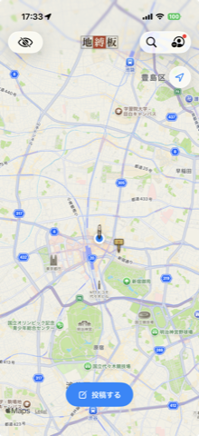
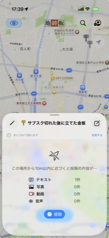
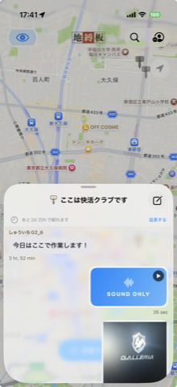
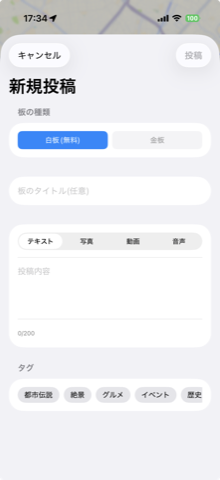
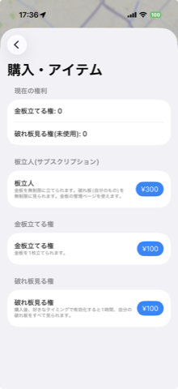
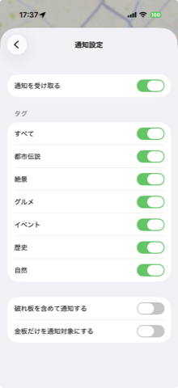
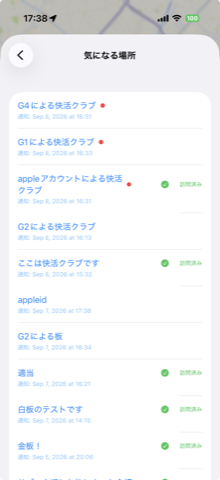
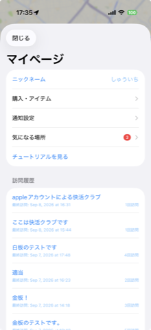
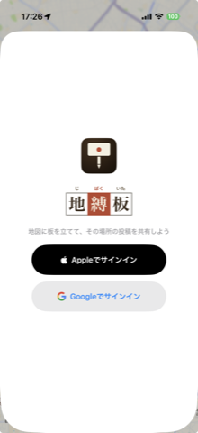

地図上の「その場所」に板を立て、実際に足を運んだ人だけが読める掲示板アプリ
地縛霊が土地に縛られるように、板もまたその場所に縛られる。オンラインなのに、現地に行かないと会話に参加できない——そんな体験を提供します。
SNSは距離を消してきました。地縛板はあえて距離を戻し、「そこに行かないと読めない」制約を核に据えています。
地図上の好きな場所にピンを立て、板(白板 or 金板)として投稿を開始する。
投稿内容は板から一定距離(scope)以内に実際にいる時だけ閲覧できる。
板には寿命があり、時間とともに古びて、最後は「破れ板」になって消えていく。

実際に立っている板が地図上にピンとして並ぶ、アプリのホーム画面。
板は地図上ではどこからでも見えますが、中身が読めるのは実際にその場所へ近づいた時だけです。


テキスト・写真・動画・音声、それぞれ何件投稿されているかの内訳だけが表示され、中身は見えない。経路案内でその場所へ向かうことができる。
板から一定距離(scope)以内に入ると、投稿された文章・画像・動画・音声をその場で閲覧できるようになる。右上のボタンから自分の投稿を追加することもできる。
お札や絵馬と同じように、板は生まれてから朽ちるまでの時間が決まっています。この「儚さ」が、今その場所に行く理由になります。
立てたばかりの板。地図上でも新着として目立つ表示になる。
投稿・返信のやり取りが続く、板としていちばん活発な期間。
もうすぐ消えることが表示され、駆け込みの投稿や閲覧が増える。
読めなくなり、1ヶ月後には地図・検索からも自然に姿を消す。
板の種類を選び、タイトルを付け、好きな形式で投稿するだけ。タグを付けておけば、あとから地図上の検索で見つけてもらいやすくなります。
テキスト・写真・動画・音声から選んで投稿できる。文字が苦手な場面でも、写真や音声でその場の雰囲気をそのまま残せる。

誰でも無料で板を立てられますが、長く残したい板には「金板」という選択肢を用意しています。

近くに新しい板が立つとプッシュ通知が届きます。通知を見逃しても、後から「気になる場所」一覧で振り返れます。
「都市伝説」「グルメ」のようにタグを選んでおくと、そのタグが付いた板のそばを通りかかった時だけプッシュ通知が届く。破れ板を含めるか、金板だけに絞るかも選べる。


通知された板や実際に訪れた板が一覧で振り返れる。タップすると、その板がどこにあるかをマップ上ですぐに確認できる。
一覧を開くとアプリのバッジは消えるが、訪問済みの板は「訪問済み」として区別表示され、記録として残り続ける。
アカウントに関するすべてを一箇所にまとめた、自分専用のページ。

アカウントはApple IDまたはGoogleアカウントですぐに作成でき、ニックネームを決めればすぐに板を立て始められます。

現在は関係者によるフィールドテストの段階です。